1. 시작하기
앱을 열면 맨 위에 이름 칸이 있습니다. 처음 켜면 칸이 비어 있고 "이름을 입력하세요 (애칭, 별명 등)"과 함께 커서가 그 칸에 있으니(폰은 키보드가 뜸) 바로 넣으세요. 바꾸려면 칸을 누르거나 ✕로 지우고 새로 넣으세요. 한 번 넣은 이름은 다음에도 그대로 나옵니다. 이름이 비어 있으면 아래 버튼이 눌리지 않습니다.
| 혼자 하기 | 뻐꾸기·독수리·부엉이·갈매기 봇과 바로 한 판. 인원(기본 4명)만 고르고 입장. 버튼 아래에 이번 판 주요 규칙 요약(카드 점수, 로우·하이 기준, 레버리지, 조커 장수·점수, 조커박)이 나옵니다. |
|---|---|
| 방 만들기 | 내가 방장이 되어 친구를 부릅니다. 인원·방 이름·방 키를 정하고 방 열고 입장. 와이파이·인터넷 연결 상태도 여기서 보입니다. |
| 참가하기 | 친구가 만든 방에 들어갑니다. QR 찍기, 붙여넣기, 참가 코드, 같은 와이파이의 방 목록 중 편한 것으로 고르고 방 키를 넣어 입장. |
| 소개 보기 | 네이버에서 "어디나 훌라"를 검색한 화면을 브라우저로 엽니다 (소개 글·사용 후기). |
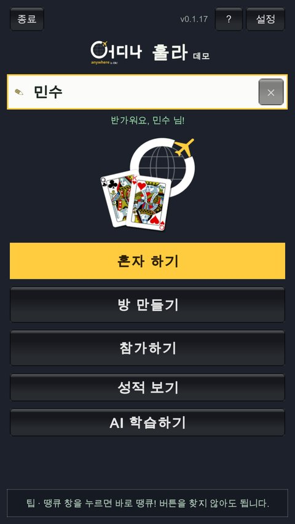
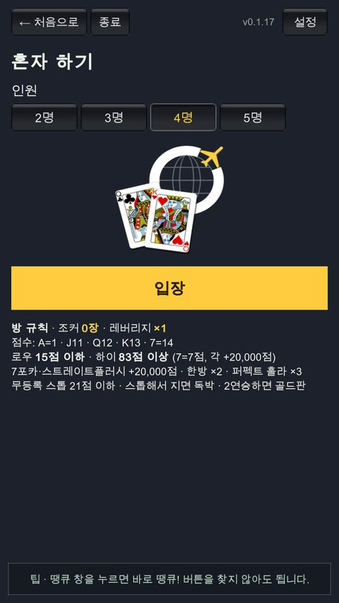
위 줄의 ← 처음으로는 첫 화면으로, 종료는 앱 끝내기, 설정은 규칙·봇 속도·레버리지·소리를 바꾸는 화면입니다 (설정에서는 ← 뒤로로 돌아갑니다). 입력 칸을 누르면 글자 전체가 선택되어 바로 고쳐 칠 수 있습니다.
2. 초대하고 참가하기
방장
방을 만들면 대기실에 참가 코드(예: P8LHHM), 방 키, QR, 방 표시 글자(예: BW)가 나옵니다.
- 옆에 있는 친구 — QR을 보여 주세요. 찍으면 방 키 없이 바로 들어옵니다.
- 멀리 있는 친구 — 카톡 초대를 누르면 카톡으로 링크가 갑니다. 받은 친구는 링크만 누르면 들어옵니다.
- 같은 와이파이 친구 — 친구의 '참가하기' 화면 방 목록에 내 방이 뜹니다. 방 키를 알려 주세요.
사람이 모자라면 빈자리 봇으로 채우고 시작. 빈자리는 혼자 하기의 AI봇과 같은 인공지능이 AI사자·AI표범… 이름으로 둡니다. 늦게 온 사람은 봇 자리를 구경하다가 그 판이 끝나면 이어받습니다 (0점부터).
참가자
- 방 목록: 같은 와이파이의 방이 저절로 뜹니다. 방 표시 글자(예: BW)로 우리 방을 찾아 누르고 방 키를 넣은 뒤 입장.
- QR: QR 찍기로 방장 화면의 QR을 찍으면 바로 입장.
- 참가 코드: 6자리 코드와 방 키를 넣고 입장. 카톡 초대 글을 복사했다면 붙여넣기.
비행기에서 (인터넷 없이) 핫스팟으로 하기
비행기·기차·캠핑장처럼 인터넷이 없는 곳에서도 됩니다. 방장 폰의 핫스팟이 공유기 역할을 하고, 친구들은 그 핫스팟에 와이파이로 붙습니다. 게임은 폰끼리만 주고받으므로 모바일 데이터를 쓰지 않습니다. 앱은 미리 설치해 두세요 (비행기에서는 내려받을 수 없습니다).
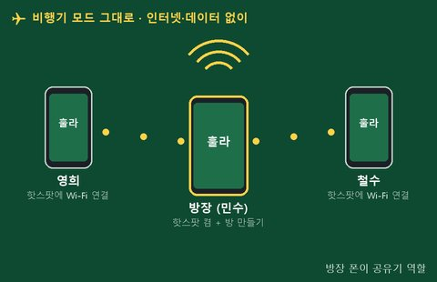
① 방장: 비행기 모드 + 핫스팟 켜기
- 폰 설정 → 연결에서 비행기 탑승 모드를 켭니다.
- 같은 화면의 모바일 핫스팟 및 테더링 → 모바일 핫스팟을 켭니다 (삼성 기준, 다른 폰은 "핫스팟" "테더링"으로 찾으세요).
- 모바일 핫스팟 글자를 눌러 핫스팟 이름과 비밀번호를 확인하고 친구들에게 알려 줍니다.
기종에 따라 비행기 모드에서 핫스팟이 회색으로 꺼져 있으면, 비행기 모드를 켠 뒤 Wi-Fi를 한 번 켰다 끄고 다시 시도해 보세요. 그래도 안 되면 그 폰은 방장을 못 하니, 다른 사람 폰으로 방장을 바꿔 보세요.
② 친구들: 방장 핫스팟에 와이파이 연결
- 비행기 탑승 모드는 켠 채로 Wi-Fi만 켭니다.
- 목록에서 방장 핫스팟 이름(예: "민수의 폰")을 누르고 비밀번호를 넣습니다.
- "인터넷 없음 — 연결을 유지할까요?"가 나오면 유지(예)를 고릅니다. 안 그러면 폰이 와이파이를 끊어 버릴 수 있습니다.
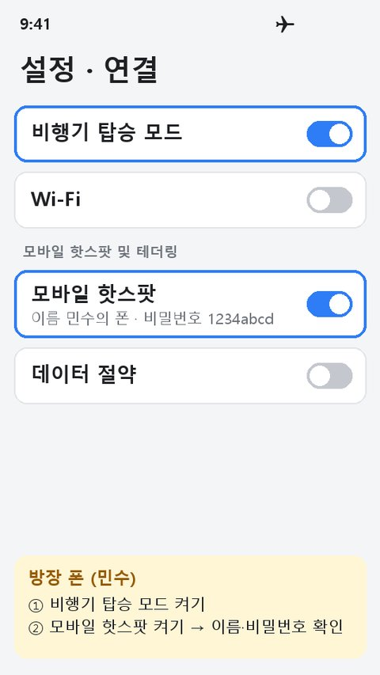

설정 그림은 이해를 돕는 예시입니다. 메뉴 이름과 위치는 폰마다 조금 다릅니다.
③ 방장: 앱에서 방 열기
- 어디나 훌라를 열고 방 만들기를 누릅니다.
- 인원(2~5명)을 고르고, 방 이름은 그대로 두거나 바꿉니다. 방 키(숫자 4자리)는 친구들에게 알려 줄 비밀번호입니다. 아래에 이 방의 규칙이 요약되어 나옵니다.
- 방 열고 입장을 누르면 대기실이 열립니다. 인터넷이 없으니 "인터넷 없음 — 같은 와이파이에서만 참가할 수 있습니다"라고 나오는데, 핫스팟은 같은 와이파이이므로 정상입니다.
- 대기실에는 QR, 방 키, 방 표시(파란 글자 2개, 예: 4W)가 보입니다. 친구가 방을 찾을 때 "4W 방이야"라고 말해 주면 쉽습니다.
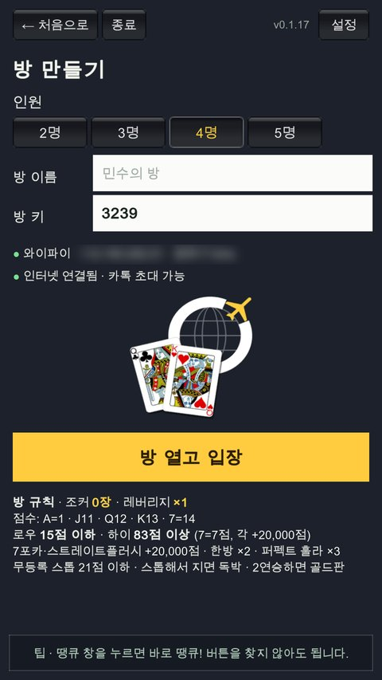
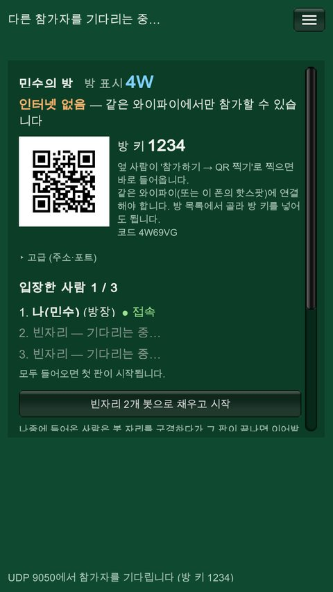
④ 친구들: 앱에서 들어가기
둘 중 편한 방법으로 들어옵니다.
- 방 목록으로: 참가하기 → "같은 와이파이의 방"에 방장 방이 뜹니다 (안 뜨면 새로 고침). 방을 누르고 방 키를 넣은 뒤 입장.
- QR로: 참가하기 → QR 찍기로 방장 화면의 QR을 찍으면 방 키 없이 바로 들어옵니다. 옆자리라면 이 방법이 가장 빠릅니다.
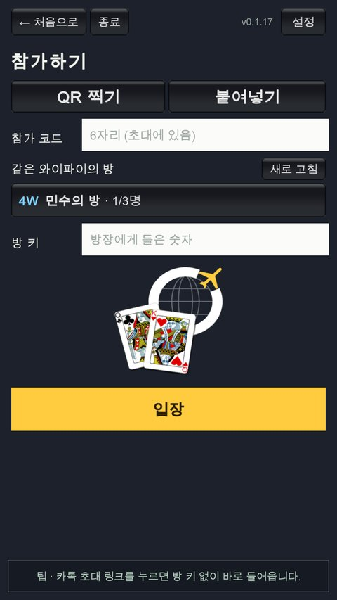
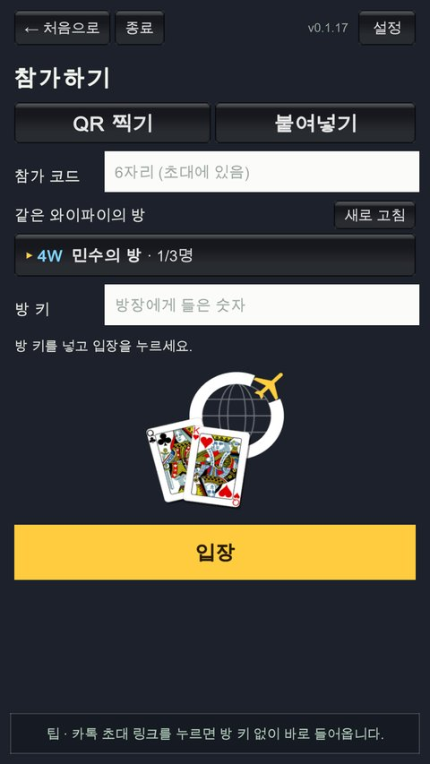
⑤ 시작
방장 대기실의 "입장한 사람"에 친구 이름과 ● 접속이 뜨고, 친구 화면에도 같은 목록이 나옵니다. 인원이 다 차면 첫 판이 저절로 시작됩니다. 사람이 모자라면 방장이 빈자리 봇으로 채우고 시작을 누르세요. 늦게 온 친구는 봇 자리를 구경하다 그 판이 끝나면 이어받습니다.
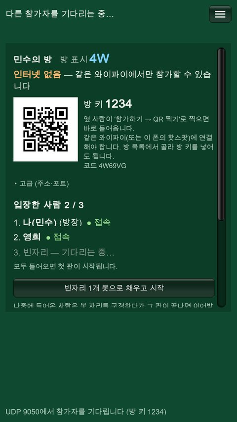
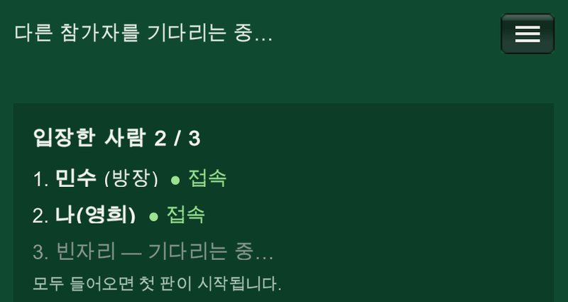
비행기에서 알아 둘 것
- 방장 폰 배터리: 핫스팟과 방을 같이 돌려 배터리를 많이 씁니다. 충전기를 꽂아 두거나 배터리가 많은 사람이 방장을 하세요.
- 방장은 앱을 끄지 마세요: 방은 방장 폰 안에 있습니다. 방장이 잠깐 다른 앱으로 가면 최대 2분 동안 게임이 멈췄다가 돌아오면 이어지지만, 앱을 완전히 끄면 게임이 끝납니다. 다른 사람은 잠깐 나갔다 와도 그 사이 봇이 대신 둡니다.
- 잠시 멈춤: 식사·이착륙 때는 방장이 ≡ 메뉴의 잠시 멈춤으로 모두의 시간을 세워 두세요.
- 소리: 기내에서는 ≡ 메뉴나 설정에서 음성·효과음을 끄거나 이어폰을 쓰세요.
- 항공사 안내를 따르세요. 이착륙 때 전자기기 사용을 멈추라고 하면 따르세요.
- 방이 안 보이면: 친구 폰이 방장 핫스팟에 연결됨인지 먼저 확인하세요. 그래도 안 되면 QR 찍기로 들어오세요.
3. 게임 화면
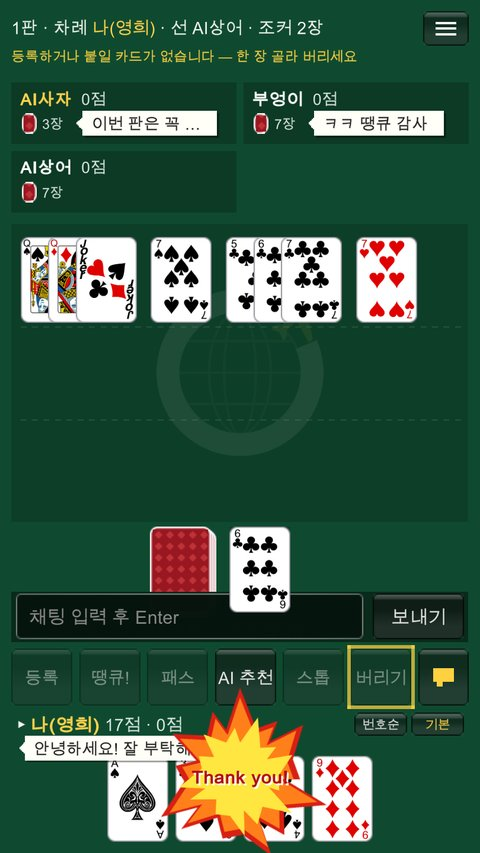
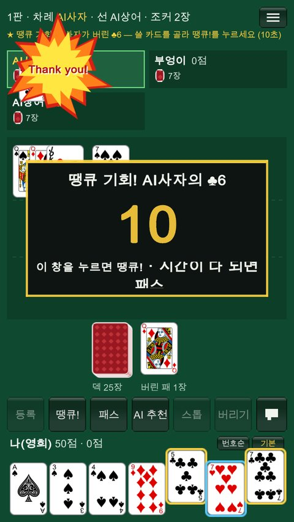
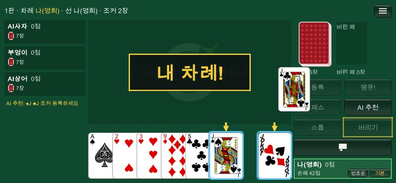
- 위: 몇 번째 판인지, 누구 차례인지, 지금 할 일. 배판·골드판 표시. (휴대폰 가로 화면은 위 줄을 짧게 하고, 지금 할 일은 왼쪽 마지막 상대 칸 밑에, 내 이름·점수·정렬 단추는 오른쪽 버튼 밑에 나옵니다.)
- 상대 칸: 이름(노랑 = 등록함), 점수, 손패 장수. 초록 테두리 = 지금 차례.
- 바닥: 모두가 등록한 조합이 차례대로 놓입니다. 조합을 길게 누르면 누가 등록했는지 보입니다.
- 덱·버린 패, 그리고 버튼: 등록(붙일 수 있을 때는 붙이기) 땡큐! 패스 AI 추천 스톱 버리기, 채팅. 잘못 누르지 않게 등록과 버리기는 양 끝에 있고, 지금 쓸 수 없는 버튼은 흐리게 꺼져 있습니다 (예: 스톱 조건이 안 되면 스톱이 꺼짐).
- 아래: 내 손패. 카드를 눌러 고르고, 끌어서 순서를 바꿉니다. 테두리는 한 차례에 함께 낼 수 있는 가장 좋은 조합 하나를 보여 줍니다 (조커는 한 번만 씀). 파랑 = 새로 등록할 카드, 초록 = 바닥 조합에 붙일 카드이고, 붙일 바닥 조합에도 초록 테두리가 생깁니다. 손에 남는 장수가 가장 적고, 빠지는 점수가 가장 크고, 남는 카드가 다음에 이어지기 쉬운 쪽을 고릅니다. 카드를 하나 누르면 그 카드를 쓰는 조합으로 바뀝니다 (예: 3 3 4 4 조커에서 처음엔 4 4 조커, 3을 누르면 3 3 조커). 붙일 바닥 조합에도 테두리가 생깁니다. 내 차례가 아니어도 늘 보입니다. 조커를 쓰는 조합이면 위 안내줄에 짝이 나옵니다 (예: "조커 짝: ♥J + 조커 2장 = 조합"). 고른 카드가 그대로 등록·붙이기가 되면 그렇게 낸 뒤 남은 손패 기준으로 테두리가 바뀝니다. 땡큐 기회가 열리면 버린 카드를 받았다고 치고, 그 카드와 함께 조합이 되는 손패에 테두리가 생깁니다.
- AI 추천: AI가 지금 둘 다음 한 수를 알려 줍니다 (대신 두지는 않음). 안내줄에 "♠9 ♠10 바닥 조합에 붙이세요"처럼 나오고, 낼 카드·붙일 조합·덱 위에 노란 화살표가 생깁니다. 내가 두거나 판이 바뀌면 사라집니다.
- 채팅: 말풍선 단추로 입력칸을 열고, 입력칸 밖을 누르면 닫힙니다. 보낸 말은 그 사람 이름 옆(세로 화면은 이름 밑)에 말풍선으로 5초 동안 나오고, 휴대폰 가로 화면은 왼쪽 상대 칸 밑에 최근 채팅이 작게 남습니다.
- 내 이름 줄 오른쪽 번호순 기본: 손패를 A 2 3 … K 순서로, 또는 자동 정렬로 다시 놓습니다. 판이 끝나면 다시 기본 정렬로 돌아갑니다.
- 손패 자동 정렬: 왼쪽부터 ① 무늬·숫자 순(같은 무늬로 3장 이상 이어지는 ♣5 6 7은 여기 함께), ② 같은 숫자 2장(55, 66), ③ 같은 숫자 3~4장(666, 8888) 순서로 모입니다. 카드를 끌어 순서를 바꾸면 그 판은 내가 놓은 순서를 지키고, 새 판이 되면 다시 자동 정렬됩니다.
- 버리기: 카드 한 장을 고르고 버리기를 눌러도 되고, 버린 패 자리를 눌러도 버려집니다.
- 붙이기: 손패에서 붙일 카드만 골라 바닥 조합을 누르면 그 카드만 붙습니다. 붙일 곳이 한 군데뿐이면 붙이기 버튼으로도 됩니다 (그림으로 보기). 안 붙는 조합을 누르면 위 안내줄에 까닭이 잠깐 나옵니다.
- 내 차례가 오면 가운데에 "내 차례!"가 뜨고, 지금 눌러야 할 덱이나 버리기가 깜빡입니다.
- ≡ 메뉴: 방 나가기, 음성·효과음 켬/끔, AI에게 맡기기, 내 성적, 진행 기록. (방장은 잠시 멈춤, 마지막 판 선언, 그만하기)
- AI에게 맡기기: ≡ 메뉴(PC 가로 화면은 위 줄 버튼)에서 누르면 내 자리를 AI가 대신 둡니다. 내 이름 옆에 (AI)가 붙고, 방에는 "(AI에게 맡겼습니다)"가 채팅으로 나갑니다. 같은 자리에서 내가 다시 하기로 되찾습니다. 방장·참가자 모두, 같은 와이파이·인터넷 모두 됩니다.
- 잠시 멈춤(방장): 방을 닫지 않고 게임 전체를 멈춥니다. 모두의 시간이 서고, 다른 사람 화면에는 "방장이 게임을 잠시 멈췄습니다" 안내가 뜹니다. 방장이 ▶ 다시 시작을 누르면 이어서 합니다.
- 나가기: 방장이 방을 닫거나 게임이 끝나면 판 화면(손패·땡큐 창)은 치워지고, 모두에게 누가 얼마(±)를 땄고 몇 승 몇 패인지 성적표가 나오고 닫기로 끝납니다. 참가자가 나가면 그 자리는 봇이 이어서 두고 이름 옆에 "나감(봇)"이 붙습니다. 같은 폰으로 다시 들어오면 그 자리를 이어받습니다.
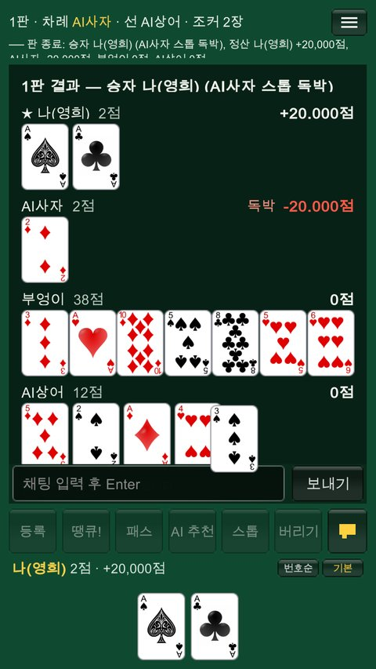
AI 학습하기 (내 AI)
- 처음 화면 AI 학습하기를 누르면 AI · 설정 · 기록 세 탭이 나옵니다. 학습은 모두 이 기기 안에서 하고, 기록은 밖으로 보내지 않습니다.
- [AI] 탭: 표 하나에 기본 AI(1500)·봇(참고)·나를 닮은 AI·더 강한 AI의 평점과 자료 수가 나오고, 지금 쓰는 AI에 ★가 붙습니다. 각 줄의 학습하기로 학습하고 삭제로 지웁니다. 진행 막대와 결과는 표 바로 밑(가로 화면은 오른쪽)에 나옵니다.
- 나를 닮은 AI: 내 플레이 기록으로 기본 AI를 고쳐 내 스타일을 따라 두는 AI를 만듭니다. 따라 할 수가 200수 이상이어야 합니다. 학습 방식: 판 나눠 배우기(기본 — 이긴 판·선방한 판의 수는 따라 하고, 가장 많이 잃은 판에서 기본 AI와 다르게 둔 수는 피함), 이긴 판만, 모든 판.
- 더 강한 AI: 혼자 하기와 내가 연 방에서 모든 자리의 수를 모아(이름은 남기지 않고 사람·AI·봇만 구분), 그 판 승자의 수는 따라 하고 가장 많이 잃은 자리의 실수는 피합니다. 친구들과 둔 판이 많을수록 좋아집니다.
- 천천히 배웁니다: 수십만 판을 배운 기본 AI를 내 기록 몇천 수로 뒤집지 않도록, 내 AI는 기본 AI의 생각을 반쯤 섞어 조금씩 배우고 기본 AI에서 멀리 벗어나지 않습니다. 그래서 한 번 학습으로는 많이 바뀌지 않지만 실력은 지키고(평점이 기본 AI 아래로 잘 안 떨어짐), 이어서 학습할 때마다 조금씩 더 닮아 갑니다.
- 학습 뒤 평점: 학습이 끝나면 바로 평점을 잽니다 (같은 100판, 1분 안팎). 이미 저장된 AI보다 낮으면 저장하지 않고 기존 AI를 그대로 둡니다. 아니면 "저장할까요?" 예, 저장 / 아니요로 고릅니다. 평점이 기본 AI(1500)보다 높으면 AI 대리·AI 추천에 이 AI를 쓰고, 낮으면 저장해도 기본 AI를 씁니다.
- 이어서 학습: 저장된 AI가 있으면 버튼이 이어서 학습으로 나옵니다. 저장된 AI에서 시작해 지난 학습 뒤 새로 쌓인 기록과 같은 수의 예전 기록만 섞어 배우므로 훨씬 빠릅니다 (새 기록이 200수 이상일 때, 예전에 만든 AI는 처음 한 번만 모든 기록). 평점이 낮아 저장하지 않았어도 다음에는 그 뒤 기록부터 배우고, 새로 둔 판이 없으면 학습하지 않고 바로 알려 줍니다. 학습 방식을 바꿔도 이어서 합니다. [설정] 탭 다음 학습에서 처음부터(모든 기록)로 바꿀 수 있고, 기본 AI가 바뀌면(새 버전) 저절로 처음부터 합니다.
- [설정] 탭: AI 대리·AI 추천에 쓸 AI(기본 AI · 나를 닮은 AI · 더 강한 AI), 모험 성향, 다음 학습(이어서/처음부터), 나를 닮은 AI 학습 방식. 혼자 하기의 AI봇은 늘 기본 AI입니다.
- [기록] 탭: 지금까지 모은 기록 수, 기여하기, 기록 주고받기, 기록 모두 지우기. 기록을 켜고 끄는 것은 앱 설정 화면에 있습니다.
- 피해 최소화 검증: 따라 하려는 수가 큰 손실(무등록 꼴등·조커박·뻔짜·땡큐삐리 등)로 이어질 위험이 크면 "모험 중단"으로 보고 안전한 수를 대신 배웁니다. 내 AI가 대신 둘 때도 같은 검사를 합니다. 모험 성향: 신중 · 보통(기본) · 공격(검사 끔).
- 평점: 누구나 같은 100판(AI와 봇이 섞인 상대)을 기본 AI·봇·내 AI가 각각 둬서 매깁니다. 기본 AI가 1500이고, 판당 10점 차이가 평점 1점입니다 (봇은 약 1380).
- 순위표: 처음 화면 버튼 아래에 AI 랭킹 1~5위와 내 순위, 성적 화면(혼자 하기)에 이번 달·이번 분기 상금 랭킹 1~10위와 내 순위가 나옵니다 (가로 화면은 오른쪽, 세로 화면은 아래). 홈페이지에도 하루 여러 번 갱신됩니다. 기본으로 참여하며, 설정에서 순위표 참여를 끌 수 있습니다 (끄면 이름이 "익명"으로).
- 기여하기: 내 AI나 강한 AI의 평점이 기본 AI(1500)보다 높으면 기여하기가 나옵니다. 누르면 내 기록과 AI 파일을 이름 없이 올려, 다음 기본 AI를 키우는 데 씁니다.
- 기록 주고받기: 기록 보내기로 내 기록과 AI 파일을 카톡 등으로 보낼 수 있고, 친구에게 받은 기록 파일은 기록 가져오기로 넣으면 강한 AI 학습에 쓰입니다 (나를 닮은 AI에는 쓰지 않음). 잘 치는 친구의 기록을 받으면 강한 AI가 더 좋아집니다.
4. 규칙
패 나누기
한 사람에 7장. 선(지난 판 승자)부터 2장씩, 2장씩, 3장씩 돌립니다. 선이 덱에서 한 장 뽑으며 판이 시작됩니다.
차례
- 덱에서 1장 뽑기 (버린 패는 땡큐로만 가져갈 수 있습니다)
- 등록하거나 붙이기 (할 수 있으면, 여러 번 가능)
- 1장 버리기 — 손패가 1장 남으면 그 카드는 저절로 버려집니다
조합 (등록)
- 같은 숫자 3장 이상 (예: 8 8 8)
- 같은 무늬로 이어지는 3장 이상 (예: ♠4 ♠5 ♠6). K → A → 2로 이어져도 됩니다.
- 7은 한 장만으로도 등록됩니다.
- 7과 같은 무늬 6이나 8 두 장도 함께 등록됩니다 (예: ♣7 ♣8을 같이 골라 등록).
붙이기
등록한 사람은 바닥 조합에 맞는 카드를 무엇이든 붙일 수 있습니다. 아직 등록 안 한 사람은 붙이는 카드만으로도 조합이 될 때만 붙일 수 있고, 붙이면 등록이 됩니다. 7은 누구나 붙일 수 있습니다.
- 예: 바닥 ♥2 3 조커 — 무등록이면 ♥4 5는 못 붙이고 ♥4 5 6은 붙입니다(등록). 등록했으면 ♥4 5도 붙입니다.
- 조커 자리 채우기: 같은 숫자 조합에 조커가 있으면, 그 숫자의 진짜 카드를 붙일 때 조커가 빠지고 진짜 카드가 그 자리를 차지합니다. 3 3 조커 + 3 → 3 3 3, 3 3 3 조커 + 3 → 3 3 3 3. 빠진 조커는 그 판에서 더 쓰지 않습니다.
- 연속 조합의 조커는 처음 놓은 자리에 고정됩니다. 그 자리의 진짜 카드를 붙이면 조커가 빠집니다 (♠9 조커 ♠J ♠Q + ♠10 → ♠9 10 J Q, 그다음 ♠A는 K가 없어 못 붙음). 조커가 앞뒤 어느 쪽에도 갈 수 있으면 (♣10 ♣J 조커 = ♣9 쪽 또는 ♣Q 쪽) 등록·땡큐·붙이기 할 때 "조커를 어느 쪽에 둘까요?" 창에서 고릅니다. 같은 숫자 조합(8 8 조커)이나 조커가 가운데 빈칸에 들어가는 경우는 묻지 않습니다. 땡큐 중에 고르다 시간이 다 되면 땡큐를 놓치지 않게 조커를 낮은 쪽(이어진 카드 앞)에 두고 땡큐합니다.
- 바닥에 7 한 장이 있고 내 손에 7이 두 장이면, 두 장을 골라 붙이기 → 777. 이때 붙이기는 되지만 등록은 아닙니다(미등록 그대로). 7 두 장만으로 새로 등록할 수는 없습니다.
- 내 손에 7이 세 장이면 바닥 7에 붙여 7777. 7 세 장은 그것만으로도 조합이라 등록으로 칩니다.
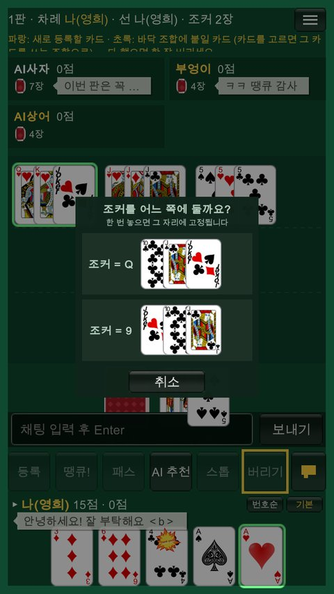
땡큐
누가 카드를 버리면 잠깐(기본 10초) 땡큐 기회가 열립니다. 그 카드로 내 손패와 조합을 만들 수 있으면 땡큐!로 가져가 바로 등록합니다.
더 빠른 방법: 조합이 될 카드를 고르면 가운데 땡큐 창(시간이 줄어드는 풍선)이 깜빡이며 "이 창을 누르면 땡큐!"가 뜹니다. 버튼을 찾을 필요 없이 그 창을 누르면 바로 땡큐입니다.
- 전투 훌라(기본): 누구든 땡큐할 수 있고, 여럿이면 버린 사람 다음 차례에 가까운 사람이 가져갑니다.
- 일반 훌라: 버린 사람의 다음 차례만 땡큐할 수 있습니다.
- 버린 조커는 땡큐로 받을 수 없습니다. 조커를 버리면 땡큐 창 없이 바로 다음 차례로 넘어갑니다.
판이 끝나는 경우
| 훌라 | 손패를 모두 내려놓으면 승리. |
|---|---|
| 한방 | 등록한 적 없이 한 차례에 모두 내려놓음 → 벌금 2배. |
| 퍼펙트 훌라 (손훌) | 땡큐·조커·붙이기 없이 손패 7장만으로 한 차례에 모두 내려놓음 → 벌금 3배 (한방 2배 대신). 그 전에 조커를 버린 것은 괜찮습니다. |
| 스톱 | 내 차례 시작(뽑기 전)에 선언. 모두 손패를 공개하고 점수(카드 점수)가 가장 낮은 사람이 이깁니다. 등록 안 했으면 손패가 무등록 스톱 기준(기본 21점 이하, 설정에서 23·25점 이하·무조건·불가) 이하일 때만 스톱 가능 (설정 보기). 선언자가 혼자 가장 낮지 않으면 독박 — 선언자 혼자 벌금을 몰아 냅니다. |
| 덱 소진 | 덱이 떨어지면 점수가 가장 낮은 사람이 승리. |
| 특별 승리 | 포카: 내가 직접 낸 7(등록·붙이기·땡큐) + 손의 7 = 네 장이 되는 순간(덱에서 뽑거나 땡큐로 받을 때) 바로 끝납니다. 이번 판에 7을 버렸으면 안 되고, 남이 내 7에 붙인 7은 붙인 사람 몫입니다. 스트레이트플러시: 받은 장수 그대로인 손패 7장이 조커 없이 같은 무늬로 이어짐 (K → A → 2도 됨). 상금은 7포카와 같습니다. 로우(받은 7장 합 15점 이하, 설정 14~16 — 7은 7점, 조커는 14점), 하이(받은 7장 합 83점 이상, 설정 81~84 — 7은 7점, 조커는 조커 점수): 손패 7장일 때, 또는 땡큐한 차례에 한 장 버린 뒤 손패 + 땡큐 조합 = 7장일 때 판정합니다 (예: A 두 장으로 A 땡큐 → 손 4장 + 땡큐 3장). 그 차례가 지나면 기회가 없습니다. 내 차례에 한 장만 버리면 하이·로우·스트레이트플러시가 되면 위 안내줄에 "★ ♠6을 버리면 하이!"처럼 알려 주고, 시간이 지나 대신 둘 때도 그 카드를 버립니다. → 그 즉시 모두에게서 20,000점씩. 화면에 그 카드들(포카 7 네 장, 스트레이트플러시·하이·로우 7장과 합계 점수)이 크게 나오고 박수가 터진 뒤 정산이 보입니다. |
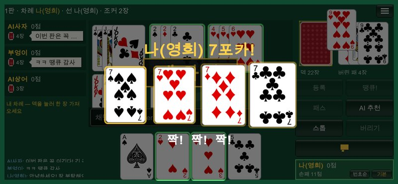
카드 점수
| 손패 점수 (스톱·정산·순위) | A=1, 2~10은 숫자 그대로, J=11, Q=12, K=13, 7=14, 조커 0점 (설정에서 14점) |
|---|---|
| 하이·로우 계산 | 7은 7점. 로우에서 조커는 14점(조커를 쥐면 로우가 거의 안 됨), 하이에서 조커는 조커 점수 |
5. 정산
진 사람은 손패 점수 순위에 따라 정해진 점수를 승자에게 냅니다 (점수가 같으면 둘 다 큰 쪽).
| 인원 | 2등 | 3등 | 4등 | 꼴등 |
|---|---|---|---|---|
| 2인 | — | 5,000 | ||
| 3인 | 3,000 | — | 4,000 | |
| 4인 | 2,000 | 3,000 | — | 5,000 |
| 5인 | 1,000 | 2,000 | 3,000 | 4,000 |
- 무등록: 이번 판에 등록을 못 했으면 꼴등 벌금 + 꼴등 벌금 한 번 더.
- 땡큐삐리: 땡큐로 가져간 사람이 그 차례에 다 내려놓았으면, 그 카드를 버린 사람이 꼴등 벌금 + 꼴등 벌금 한 번 더.
- 뻔짜: 손에 남은 7 한 장마다 꼴등 벌금.
- 조커박: 판이 끝날 때 손에 쥔 조커 한 장마다 기본 벌금 ×2 (설정 ×3) — 2장이면 ×4 (×9). 그 판에 자기 차례가 한 번도 오지 않았으면 걸리지 않습니다.
- 배판(한방 2배·퍼펙트 훌라 3배·무효 다음 판·골드 성공)은 기본 벌금에만 곱합니다. 레버리지(×1~×10)는 모든 점수에 곱합니다.
판 결과에는 이름 옆에 그 판 점수가 늘 나오고, 진 사람은 붉은 글씨에 마이너스(−)로 표시됩니다. 진 사람마다 내역도 나옵니다. 예: 꼴등×2+땡큐삐리+골드 상금 13,000점
6. 골드 · 무효 · 카드떼기
- 골드: 같은 사람이 2판 연속 이기면 3판째부터 골드판. 골드인 사람이 또 이기면 골드 성공 = 2배, 다른 사람이 이기면 1배. 연승은 골드가 되었을 때만 이름 옆에 ★골드 N연승으로 표시합니다.
- 골드 상금: 골드판마다 골드인 사람이 1,000점을 내놓고 그 판 승자가 가져갑니다. 무효면 다음 판으로 이월됩니다.
- 카드떼기: 골드판을 나누기 전에 말(선 바로 앞 차례)이 덱을 뗍니다. 화면에 펼쳐진 덱에서 뗄 곳을 누르세요 (10초 안에 안 하면 저절로).
- 무효: 스톱·덱 소진으로 끝났는데 가장 낮은 점수가 3명 이상 같으면 정산 없이 끝나고 다음 판은 2배. 골드도 풀립니다.
성적 보기
첫 화면의 성적 보기에서 끝난 게임의 기록을 봅니다 (이 폰에 최근 100게임 저장).
- 혼자 하기: 게임 수, 1등 횟수, 판 수·승·패·승률, 점수 합계, 최고·최저 게임.
- 여럿이: 같은 합계에 더해 방별(방 이름을 누르면 그 방의 게임마다 날짜·방 키·모두의 점수·승패), 같이 친 사람(같이 한 게임 수, 내가 앞선·뒤진 게임, 내 점수), 최근 게임.
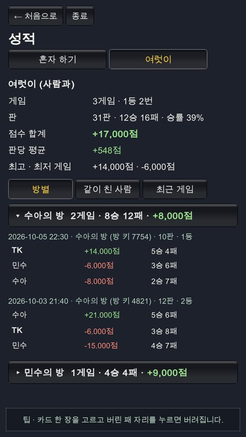
7. 설정 · 소리
- 오른쪽 위 설정에 모두 있습니다. 혼자 하기와 방 만들기는 설정을 따로 기억합니다: 마지막으로 시작한 게임의 인원·규칙이 다음번 기본값이 됩니다 (예: 혼자 5인으로 했으면 다음 혼자 하기도 5인).
- 이름은 처음 한 번 넣으면 다음부터 그 이름이 들어가 있습니다.
- 봇(실력) 선택 · 혼자 하기: 봇+AI봇 혼합(기본, 봇 자리를 번갈아), 봇(보통), AI봇(뛰어남). AI봇은 수십만 판을 스스로 두며 배운 인공지능으로(버린 카드를 기억하고 골드판도 따짐), 이름이 AI사자·AI표범·AI늑대·AI상어로 나오고 테두리 색으로 구분됩니다.
- AI 학습용 내 플레이 기록(기본 켬): 내가 직접 둔 수를 이 기기에만 저장해 "내 AI" 학습에 씁니다. 이 설정 화면에서 끄고, 처음 화면 AI 학습하기 → [기록] 탭에서 지울 수 있습니다. 방장일 때 모든 자리 기록(기본 켬)은 더 강한 AI 학습에 씁니다. (0.1.11에서 규칙이 바뀌기 전 기록은 한 번 지우고 새로 모읍니다.)
- 봇 속도: 느림 · 보통 · 빠름. 혼자 하기(기본 보통)와 방 만들기의 빈자리 봇(기본 빠름)을 따로 정합니다. 레버리지(모든 상금·벌금 ×1~×10).
- 조커(0~2장), 판 수, 무등록 스톱(21점 이하 · 23점 이하 · 25점 이하 · 무조건 · 불가, 기본 21점 이하), 조커 점수(0·14점, 기본 0)와 조커박(장당 2·3배, 기본 2배), 로우 기준(14~16점, 기본 15), 하이 기준(81~84점, 기본 83), 땡큐 방식과 기회 시간(6~14초), 턴 시간(지나면 30초 카운트다운, 그래도 안 두면 힌트대로 자동), 벌금 금액.
- 혼자 할 때 '판 끝나면 정산 보고 [다음 판] 누르기'를 Y로 하면 결과를 천천히 볼 수 있습니다.
- 음성(훌라! 땡큐! 하세요! …)과 효과음은 따로 끄고 켭니다. 폰이 무음·진동이면 소리가 나지 않습니다.
- 게임 중에는 화면이 저절로 꺼지지 않습니다.
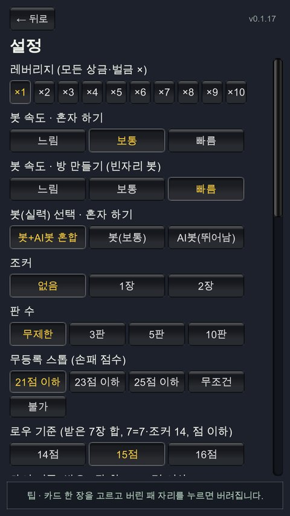
8. 자주 묻는 질문
바닥 ♠6 7 8에 ♠9만 붙이고, ♠10 ♥10은 땡큐하려고 남겨 두고 싶어요
손패에서 ♠9 한 장만 눌러 고른 뒤, 바닥의 ♠6 7 8 조합을 누르면 ♠9만 붙습니다.
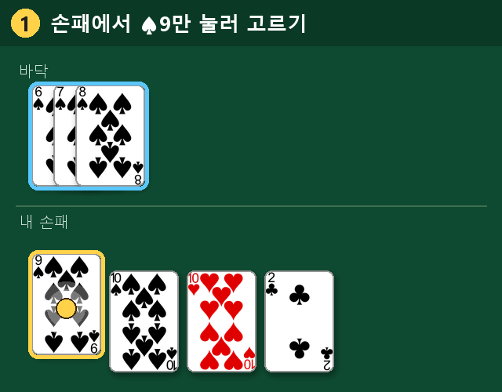
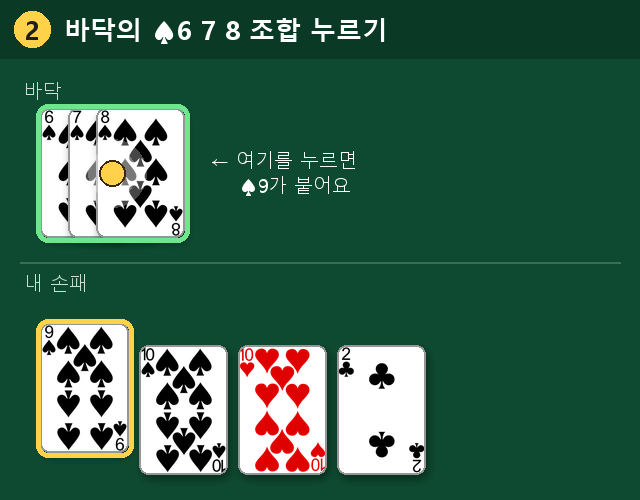
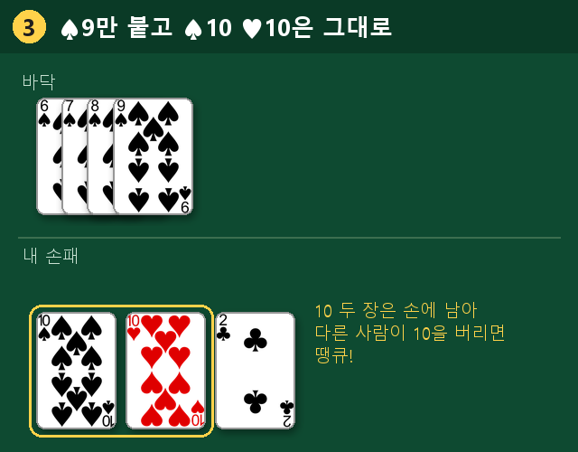
- 붙일 곳이 한 군데뿐이면 카드를 고른 뒤 붙이기 버튼을 눌러도 됩니다. 여러 군데면 위 안내줄에 "붙일 바닥 조합을 누르세요"가 나오니 조합을 직접 누르세요.
- AI 추천은 AI가 고른 다음 한 수를 화살표로 알려 줄 뿐 대신 두지 않습니다. 땡큐를 노릴 때는 추천과 달라도 직접 골라 두면 됩니다.
땡큐를 눌렀는데 다른 사람이 가져갔어요
땡큐는 누른 속도가 아니라 순서로 정합니다. 땡큐 창이 닫힐 때(모두 고르거나 기회 시간이 끝나면) 땡큐를 누른 사람 중 버린 사람 다음 차례에 가장 가까운 사람이 가져갑니다. 그래서 내가 먼저 눌러도 앞 순서 사람이 땡큐하면 그 사람이 가져갑니다. 못 가져가면 안내줄에 까닭이 나옵니다: "○○님이 순서가 앞서 땡큐 (내 땡큐는 밀림)" 또는 창이 닫힌 뒤 눌렀으면 "시간이 지나 땡큐하지 못했습니다".
등록 안 했는데 스톱이 안 눌려요
등록하지 않은 사람은 손패 점수가 무등록 스톱 기준 이하일 때만 스톱할 수 있습니다. 기본은 21점 이하이고, 설정(⚙)에서 바꿉니다. 내 차례에 스톱할 수 없으면 위 안내줄에 "무등록 스톱은 21점 이하 (지금 26점)"처럼 이유가 나옵니다. 등록한 사람은 점수와 상관없이 스톱할 수 있습니다.
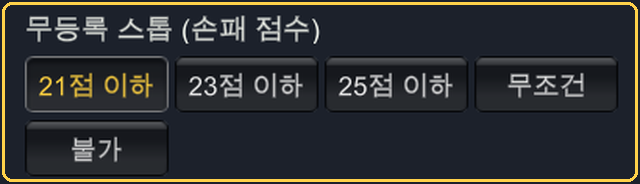
앱은 어디서 받나요? 데모는 언제까지 쓰나요?
지금은 Google Play 비공개 테스트 중이라, 초대받은 테스터만 참여 링크(테스터 되기)로 Play 스토어에서 설치할 수 있습니다. 예전에 홈페이지에서 받은 APK가 있으면 먼저 지우고 설치하세요. 데모판은 2026년 12월 31일까지 쓸 수 있고, 그 뒤에는 새 버전으로 업데이트해야 합니다.
같은 와이파이인데 방 목록에 방이 안 보여요
폰의 와이파이가 방장과 같은 공유기인지 확인하세요. 집에 와이파이 이름이 두 개(통신사 모뎀 것, 공유기 것) 있으면 다른 네트워크일 수 있습니다. 참가하기 화면의 '내 주소' 앞부분(예: 192.168.0.)이 방장과 같아야 합니다. 그래도 안 보이면 참가 코드로 들어오세요.
카톡 링크를 눌렀는데 앱이 안 열려요
앱을 먼저 설치하세요. 그래도 안 되면 링크 페이지의 참가 코드를 복사해 '참가하기 → 붙여넣기'.
게임 중에 전화가 와서 나갔어요
참가자는 앱으로 돌아오면 다시 연결되어 내 자리를 이어받습니다. 그 사이 내 자리는 봇이 대신 둡니다. 방장이 앱을 벗어나면 최대 2분 동안 게임이 멈추고 모두 기다립니다.
방장 폰이 꺼졌어요
방은 방장 폰 안에 있어서, 방장 폰의 배터리가 다 되거나 앱이 꺼지면 게임이 끝납니다. 다른 사람 화면에는 20초쯤 뒤 "방장이 나가서 게임이 끝났습니다"와 지금까지의 성적표가 나오고, 닫기로 나갑니다. 이 기록도 성적 보기에 남습니다.
문의

만든 곳 Odina Studio (anywhere · 어디나) · taekan66@gmail.com · 개인정보처리방침